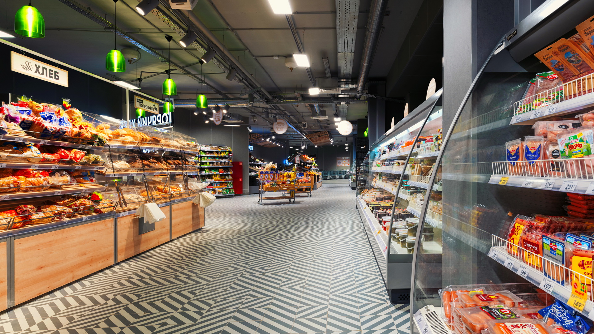
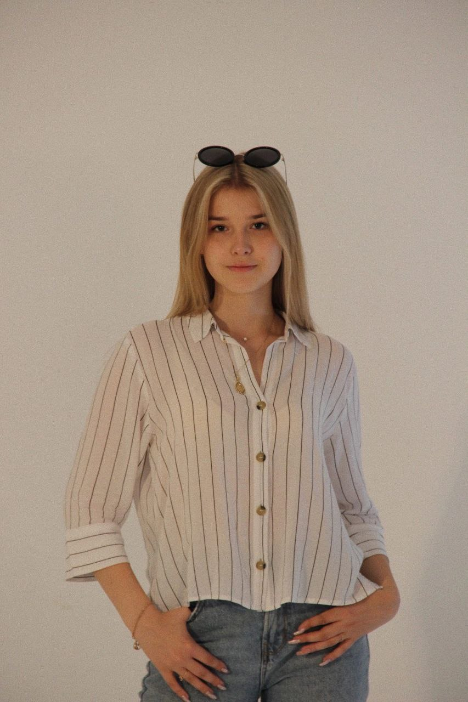
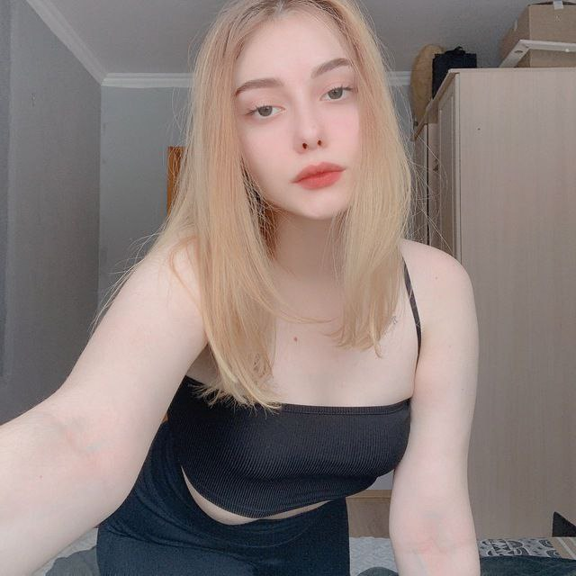
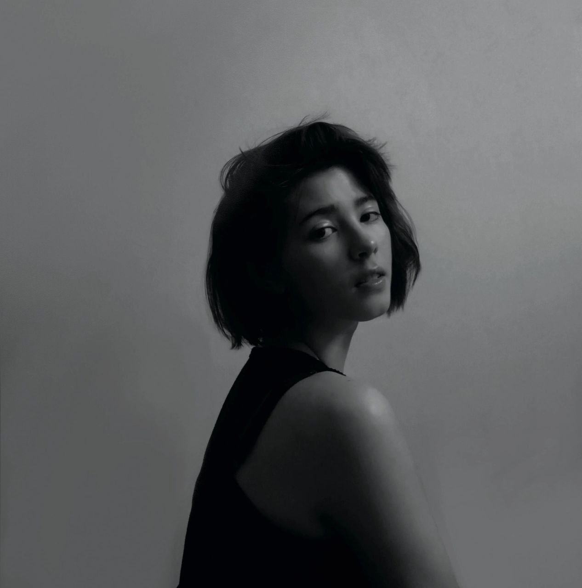

maximum loser
Достижения
Украл в продуктовых магазина: 21 большую банку нутеллы, 43 средних, 1076 киндер сюрпризов(428 из них киндер джой), 322 литра газированных напитков компании кока-кола и т.д. То есть мы можем сделать вывод, что достижений нет никаких.
Женщины
Как нам известно, Максим тот еще ловелас, поэтому в данном разделе мы рассмотрим самых прекрасных спутниц его жизни.
Виктория Абрамова
как сам Максим отзывался о ней, Виктория максимально добра и мила, поэтому она заняла место в топе.
Аделина Дергунова
Аделина - первая любовь Максима, здесь не надо лишних слов, чтобы понять почему она в топе.
Кто это такой?
Славнов Максим Игроревич, родился 23.09.03 на станции СОСНЯК(SUCKER), да прям на станции, в дальнейшем эта станиции станет главным элементом становления максима как личности.
Маргарита Казаковская
Эта девушка в топе только из жалости.
Виолетта Молко
Виолетта пришла в его жизнь в трудный момент, тем самым помогла скрасить это пасмурное мгновение и усыпать перкрасными эмоциями жизнь Максима.